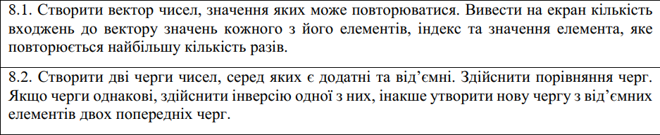
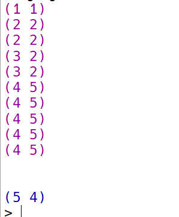

Функціональне програмування
Факультет інформаційних технологій
Кафедра програмних систем та технологій
Лабораторна робота 6
Обробка структур типу векторів і матриць, стеків та черг мовами функціонального програмування
Примачук Максим Григорович
Група: ІПЗ-44мс
Викладач: Ніколаєнко А.Ю.
2023
Мета
Опанувати теоретичні основи обробки структур типу векторів і матриць, стеків та черг мовами функціонального програмування та розробити програми їх реалізації
Варіант 8
Хід роботи
Завдання 1
Код
Посилання
#lang scheme
(define (most-repeated vec)
(let* ((counts (make-vector (vector-length vec) 0))
(max-count 0)
(max-index 0))
(do ((i 0 (+ i 1)))
((= i (vector-length vec)))
(let ((val (vector-ref vec i)))
(do ((j 0 (+ j 1)))
((= j (vector-length vec)))
(cond ((= val (vector-ref vec j))
(vector-set! counts i (+ 1 (vector-ref counts i)))))))
(cond ((> (vector-ref counts i) max-count)
(begin
(set! max-count (vector-ref counts i))
(set! max-index i)))))
(list max-index (vector-ref vec max-index))))
(define (count-occurrences vec)
(let ((counts (make-vector (vector-length vec) 0)))
(do ((i 0 (+ i 1)))
((= i (vector-length vec)))
(let ((val (vector-ref vec i)))
(do ((j 0 (+ j 1)))
((= j (vector-length vec)))
(cond ((= val (vector-ref vec j))
(vector-set! counts i (+ 1 (vector-ref counts i))))))))
(do ((i 0 (+ i 1)))
((= i (vector-length vec)))
(display (list (vector-ref vec i) (vector-ref counts i)))
(newline))))
(count-occurrences '#(1 2 2 3 3 4 4 4 4 4))
(newline)
(newline)
(most-repeated '#(1 2 2 3 3 4 4 4 4 4))
Результат
Висновок
При виконанні лабораторної роботи створено функцію, що повертає кількість входжень до вектору значень кожного з його елементів. Також створено функцію, що повертає індекс та значення елемента, яке повторюється найбільшу кількість разів.